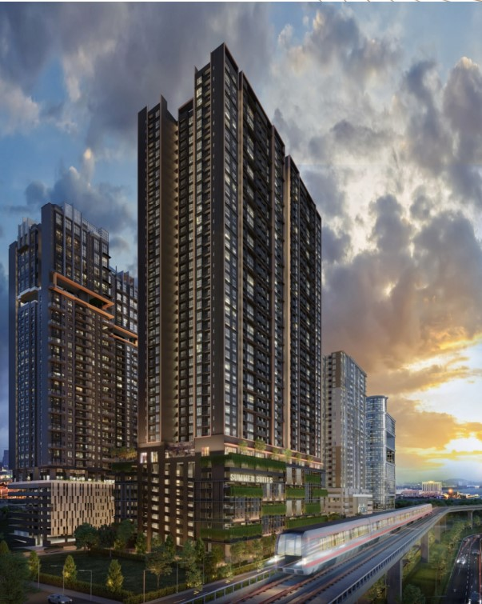

Many foreign buyers believe every property they buy in Johor must cost at least RM1 million. That is the normal rule most people hear, but it is not the full picture. In practice, there are three possible routes worth checking: selected approved new projects, Medini and Forest City.
Why do people think the minimum is RM1 million?
Foreign property ownership in Malaysia is controlled at state level. In Johor, RM1 million is the general number commonly used for foreign residential purchases. A buyer must also avoid restricted categories and obtain the required consent.
The important point is that a general threshold and a property-specific approval are not the same thing. Special areas and selected developer stock may follow a different approved route. Before paying a booking fee, the buyer should ask for written confirmation that the exact unit is eligible.
Watch the original explanation
In this video, I explain the three routes in simple terms.
Option 1: Selected new projects with special approval
Some developers may receive approval to sell selected new units below RM1 million to foreign buyers. This is usually linked to a specific project, release or approved stock. It is not a general exemption for every new condominium in JB Town.
This route can suit a buyer who wants a newer home in central Johor Bahru and prefers freehold or standard strata ownership. The main advantage is location: some projects are closer to JB CIQ, shopping, city employment and the RTS corridor than Medini or Forest City.

What to check
- Is the approval for the whole project or only selected units?
- Does it apply to your nationality and buyer profile?
- Is the approved price based on the SPA price, selling price or bank valuation?
- Can the unit later be resold to another foreign buyer below RM1 million?
- What happens to the booking fee if foreign consent is not approved?
The last point is important. Entry may be easier than exit. A foreign buyer should understand the future resale pool before choosing a unit only because it is currently eligible.
Option 2: Medini
Medini is the best-known exception in Iskandar Puteri because foreign buyers can purchase at different price levels without the usual minimum price limit. This makes two- and three-bedroom condominiums below RM1 million available to international buyers.
However, Medini is more complex than a simple “cheap property” story. Much of Medini uses a private lease structure. The underlying land is freehold and held by Iskandar Investment Berhad, while developers and buyers hold layers of long-term lease interests. The remaining lease period, documents and process must be checked project by project.

Why buyers consider Medini
- No general minimum purchase price for foreign buyers.
- Near the Malaysia–Singapore Second Link.
- Close to international schools, LEGOLAND, Gleneagles Hospital and newer Iskandar Puteri developments.
- Rent can remain within roughly RM2,000–RM3,000 for many condominium choices, below the rent of some landed homes in nearby mature areas.
What to check
- The remaining private lease period and the project’s exact title structure.
- MOT-related costs, which may differ by project.
- Bank valuation and how much cash is needed if valuation is below the selling price.
- Financing eligibility. In practice, Singapore citizens and Singapore PRs may have better access to Malaysian loans, often around 70%–80%, subject to the bank.
- Competing rental supply and the future resale market.
Medini deserves its own detailed guide. The low entry price is real, but buyers should understand the private lease, financing and exit before deciding.
Option 3: Forest City
Forest City is another special market created with international buyers in mind. Qualifying units and buyer programmes may allow foreign ownership below Johor’s normal RM1 million level. The widely discussed entry point is around RM500,000 for qualifying purchases, but the current requirement must be confirmed for the selected unit and whether the buyer is using an MM2H-linked route.

Why buyers consider Forest City
- Lower entry price for qualifying foreign purchases.
- Planned island environment with sea views, golf, landscaping and resort facilities.
- Close to the Second Link corridor.
- A dedicated Forest City Special Financial Zone MM2H route may suit some long-stay buyers.
What to check
- Whether the exact unit qualifies for foreign purchase below RM1 million.
- Whether the buyer needs to use a specific MM2H or developer route.
- Actual occupancy, current rental demand and competing supply.
- Daily transport, shops and whether the island lifestyle suits the buyer.
- Future resale demand and the likely local-versus-foreign buyer pool.
Quick comparison
| Route | Main advantage | Main point to check |
|---|---|---|
| Selected new project | Newer product and possible JB Town location | Written approval for the exact unit and future resale eligibility |
| Medini | No general foreign-buyer minimum price | Private lease, valuation, financing and supply |
| Forest City | Lower international-buyer entry route | Current programme, lifestyle fit, occupancy and exit market |
Below RM1 million does not automatically mean cheap
A lower purchase price reduces the starting capital, but buyers must calculate the full cash requirement. This can include the downpayment, legal fees, foreign consent costs, MOT or stamp duty, valuation shortfall, furnishing and maintenance charges.
Foreign buyers should also avoid choosing only by price. A RM600,000 home that does not fit your transport, rental or resale plan can be more expensive than a better-located RM1 million home.
Sam’s view
Foreigners can buy selected Johor properties below RM1 million, but there is no single shortcut that works for every unit. Start with the reason you are buying: own stay, retirement, rental income or long-term investment. Then compare the title, approval, financing and future buyer pool.
If you already have a project in mind, I can help you check which of these three routes it falls under before you pay a booking fee.